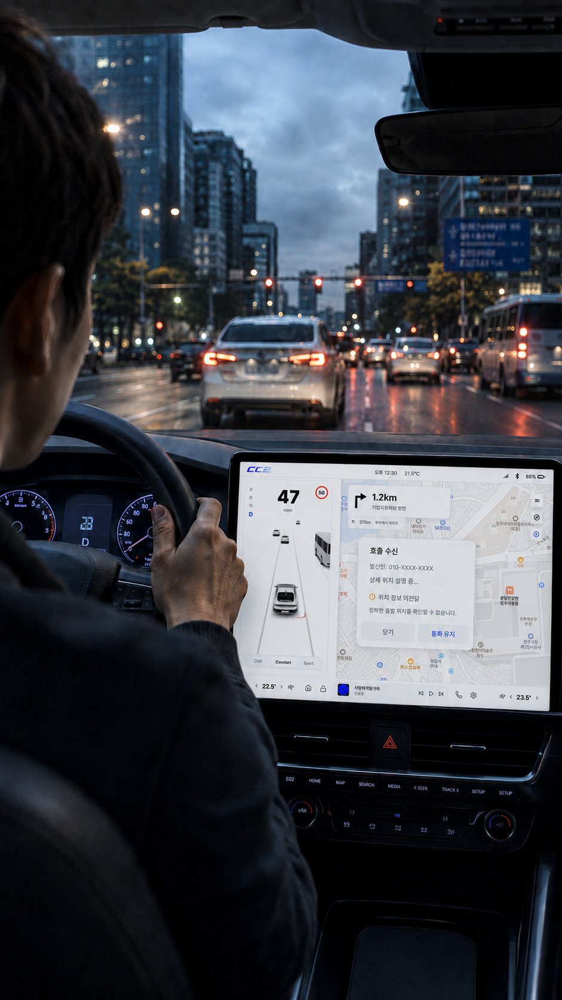
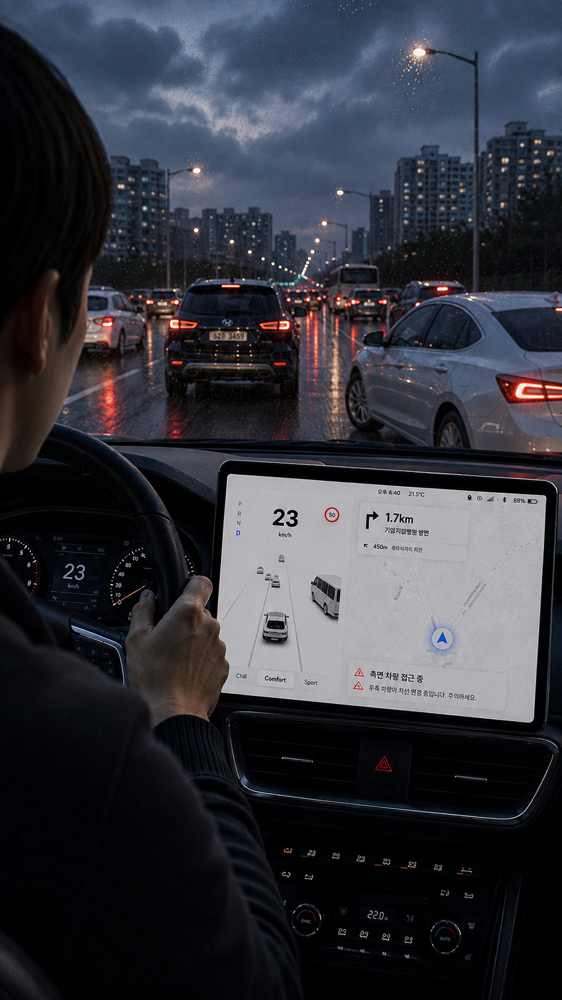
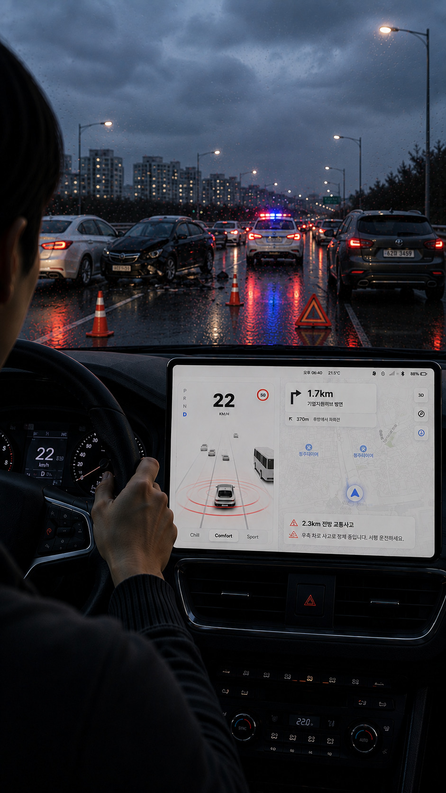
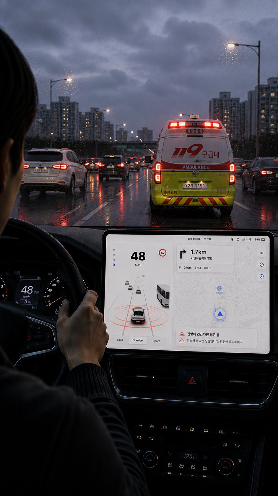

호출 정보 전달의 한계호출 정보 전달의 한계
Why Dadeullim
도로 위의 위험은
언제나 소리로 먼저 다가옵니다.
하지만 그 소리가
모두에게 들리지는 않습니다.
모든 소리가 닿을 수 있도록.
소리가 전달되지 않는 순간,
정보는 끊기고 위험은 커집니다.
즉, 이동의 불안은 일상이 됩니다.

호출 정보 전달의 한계호출 정보 전달의 한계

차량 접근 확인의 한계차량 접근 확인의 한계

교통 정보 확인의 한계교통 정보 확인의 한계

돌발 상황 대응의 한계돌발 상황 대응의 한계
멀티모달인터페이스로 전환하여 누구나 동등하게 정보를 인지하고,
안전하게 이동할 수 있는 경험을 제공하기 위해 설계되었습니다.